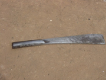
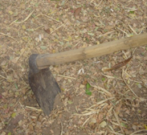
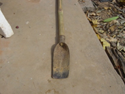
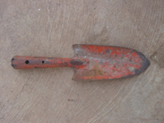
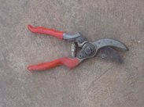
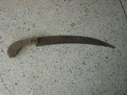
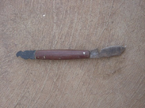
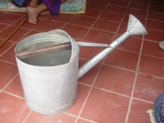
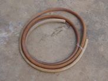

วัสดุ - อุปกรณ์ในการขยายพันธุ์พืช
การปลูกพืชจะให้เจริญเติบโตได้ดี มีความสมบูรณ์ แข็งแรง รวมทั้งประหยัดค่าใช้จ่าย
ในการดูแลรักษาอีกด้วย นอกจากนี้ผู้ปลูกควรจะเรียนรู้วิธีการเลือกใช้เครื่องมือ วัสดุอุปกรณ์ในการปลูกพืช เพื่อจะได้ปฏิบัติงานได้อย่างมีประสิทธิภาพมากยิ่งขึ้น
วัสดุ - อุปกรณ์ในการขยายพันธุ์พืช เป็นสิ่งอำนวยความสะดวกในการปฏิบัติงานได้ง่ายและรวดเร็ว ทำให้การปฏิบัติงานเป็นไปอย่างมีประสิทธิภาพ และส่งผลให้การเกษตรก้าวหน้าอีกด้วย
วัสดุที่มีความจำเป็นในการขยายพันธุ์พืช
1. ดิน ถือว่าเป็นวัสดุที่มีความจำเป็นและสำคัญมากเพราะสามารถใช้ได้กับการขยาย
พันธุ์พืชเกือบทุกชนิดเช่น การเพาะเมล็ด การปักชำ ฯลฯ ดินที่นำมาใช้กับการขยายพันธุ์พืชควรเป็นดินที่ระบายน้ำดี ถ่ายเทอากาศได้ดี ในการขยายพันธุ์พืชโดยการเพาะเมล็ดและการปักชำ นิยมใช้
ดินทรายผสมกับแกลบเผา ในอัตราส่วน 1 : 1 แต่การตอนกิ่งนิยมใช้ดินเหนียวเพราะจับตัวกันได้ดี ปั้นเป็นก้อนได้ง่าย สามารถนำมาห่อหุ้มกิ่งตอนได้ง่าย
2. แกลบเผา ในการขยายพันธุ์พืช แกลบเผาถือว่ามีความสำคัญไม่น้อยและควรใช้
แกลบเผาที่เป็นแกลบเก่า จะได้ค่าความเป็นกรดเป็นด่าง ที่เป็นกลาง แกลบเผามีคุณสมบัติที่ดีคือ
ช่วยรักษาความชื้นอยู่ได้นานและรากพืชสามารถชอนไชผ่านได้ง่าย
3. ขุยมะพร้าว กาบมะพร้าว มีคุณสมบัติที่ดีคือ ช่วยรักษาความชื้นอยู่ได้นาน และช่วย
ให้ดินปลูกโปร่ง ไม่อัดแน่น ทำให้การระบายน้ำและอากาศได้ดี
4. ถุงพลาสติก ในปัจจุบันถุงพลาสติกมีจำหน่ายตามท้องตลาดเป็นจำนวนมาก มีหลาย
ขนาดตั้งแต่ขนาดเล็กจนถึงขนาดใหญ่ ดังนั้นจึงต้องเลือกใช้ให้เหมาะสมกับการปลูก การขยายพันธุ์
5. ผ้าพลาสติก มีความสำคัญกับการขยายพันธุ์พืช โดยเฉพาะการติดตา ต่อกิ่ง
การทาบกิ่ง ผ้าพลาสติกที่ดีควรมีลักษณะใส เหนียว ทนทาน มีขนาดความกว้าง 1 นิ้ว
6. เชือกฟาง ใช้สำหรับการติดตาต่อกิ่ง ทาบกิ่งเป็นส่วนมาก
อุปกรณ์ที่ใช้ในการขยายพันธุ์พืช
ประเภทเครื่องมือและอุปกรณ์ |
ลักษณะและการใช้งาน |
การเก็บรักษา |
มีดโต้  |
มีมากมายหลายแบบหลายขนาดเช่น ด้ามสั้น ด้ามยาว ตัวมีดตรง ตัวมีดงอโค้ง ตัวมีดทำด้วยเหล็กแผ่นบาง ๆ ด้ามทำด้วยไม้หรือโลหะ ใช้สำหรับ การตัดแต่งกิ่งที่มีขนาดใหญ่ การตัดกิ่งชำที่มีขนาดใหญ่ |
หลังจากใช้งานแล้วควรจะลับให้คม และทาน้ำมันเพื่อป้องกันสนิม |
จอบ  |
ใช้สำหรับขุดดินในการขยายพันธุ์พืช ใช้ขุดราก เหง้า กอ หรือลำต้นใต้ดิน |
หลังจากใช้งานควรทำความสะอาด และเช็ดให้แห้ง ถ้าด้ามหลวมหรือชำรุดต้องซ่อมแซมให้ด้ามกระชับแน่นสนิท |
เสียม  |
ใช้สำหรับขุดหลุม ขุดย้ายต้นกล้าปลูก พรวนดิน กำจัดวัชพืช ขุดต้นพืช ขุดรากเหง้า กอ หรือ ลำต้นใต้ดิน |
หลังจากใช้งานควรทำความสะอาด และเช็ดให้แห้ง ถ้าด้ามหลวมหรือชำรุด ต้องซ่อมแซมให้กระชับแน่นสนิท |
ช้อนปลูก  |
มีลักษณะคล้ายช้อนแต่มีขนาดใหญ่ ทำด้วยเหล็กตีเป็นแผ่นบาง ๆ ดัดให้โค้งเว้า ใช้สำหรับขุดหลุม ย้ายกล้า ใช้พรวนดิน |
หลังจากใช้งานควรทำความสะอาด และเช็ดให้แห้ง ถ้าด้ามหลวมหรือชำรุดต้องซ่อมแซมให้ด้ามกระชับแน่นสนิท |
กรรไกรตัดกิ่ง  |
ใช้สำหรับตัดแต่งกิ่งพืชที่มีขนาดเล็กและเนื้อไม้ไม่แข็งจนเกินไป ( สำหรับไม้เนื้อแข็งควรมีขนาดเส้นผ่าศูนย์กลางไม่เกิน 1/2 นิ้ว) และเป็นกิ่งที่ไม่สามารถตัดด้วยมีดได้สะดวก การใช้กรรไกรตัดกิ่งให้มีประสิทธิภาพ ควรให้กิ่งเฉียงกับคมมีด ทำมุม 45 - 60 องศา และให้กิ่งพืชอยู่ระหว่างกึ่งกลางของคมมีด ขณะตัดไม่ควรพลิกหรือบิดปลายมีด เพราะอาจจะทำให้ใบมีดหัก |
หลังจากใช้งาน ต้องทำความสะอาดทุกครั้ง และตรวจดูว่ามียางไม้ติดอยู่หรือไม่ ถ้ามีควรใช้น้ำมันก๊าดเช็ดถูยางไม้ที่ติดอยู่ออกให้หมด จากนั้นทาน้ำมันป้องกันสนิมบาง ๆ แล้วจึงนำไปเก็บ |
เลื่อยตัดกิ่ง  |
ใช้สำหรับตัดกิ่งพืชที่มีขนาดโตเนื้อไม้แข็งไม่สามารถตัดด้วยมีดหรือกรรไกรได้ การใช้เลื่อยตัดกิ่งจะทำให้ได้รอยแผลเรียบไม่แตกหรือฉีกขาด แต่ก่อนใช้ควรแต่งคมและเลื่อยเข้าไปในเนื้อไม้ตามปกติ ไม่ควรกดใบเลื่อยมากเกินไป |
หลังใช้งานควรล้างหรือเช็ดให้สะอาดก่อน จากนั้นตะไบให้คมและใช้ผ้าแห้งชุบน้ำมันเครื่องทาป้องกันสนิมบาง ๆ ก่อนที่จะเก็บ |
มีดติดตา  |
ใช้สำหรับติดตาเสียบยอด มีดติดตาที่ดีจะต้องมีใบมีดคมทน ไม่ต้องลับบ่อย ๆ จับได้ถนัดมือ ควรใช้ด้วยความระมัดระวังเพราะความคมของมีด อาจทำให้ผู้ใช้ได้รับอันตรายระหว่างการปฏิบัติงานได้ |
หลังใช้งานแล้วต้องลับให้คม และทาน้ำมัน เพื่อป้องกันสนิม |
บัวรดน้ำ  |
บัวรดน้ำมีหลายขนาดหลายชนิด ต้องเลือกให้เหมาะสมกับการใช้งานและชนิดของพืช โดยทั่วไปใช้กับการให้น้ำพืชที่มีขนาดเล็ก หรือพืชที่ย้ายกล้าในระยะแรก ๆ |
หลังใช้งานทุกครั้งต้องเก็บให้เรียบร้อย โดยคว่ำหรือแขวนให้เป็นระเบียบ อย่าให้มีน้ำขังจะทำให้เกิดสนิมได้ |
สายยางรดน้ำ  |
ใช้ในการให้น้ำแก่พืช ใช้ล้างวัสดุ - อุปกรณ์ในการขยายพันธุ์พืช ถ้าใช้กับการให้น้ำแก่ต้นพืช ควรใช้กับพืชที่มีความแข็งแรง หรือพืชที่มีขนาดโต |
หลังจากใช้งานแล้วต้องม้วนเก็บให้เรียบร้อย ไม่ควรให้สายยางถูกแสงแดดตลอดวัน จะทำให้สายยางกรอบได้ |
ความปลอดภัยในการใช้เครื่องมือและอุปกรณ์
เพื่อให้เกิดความปลอดภัยและประสิทธิภาพในการปฏิบัติงาน ผู้ใช้ควรยึดหลักดังนี้
1. ศึกษาหาความรู้เกี่ยวกับวิธีการใช้เครื่องมือและอุปกรณ์นั้น ๆ ก่อนใช้จากคู่มือหรือผู้รู้
2. ใช้เครื่องมือและอุปกรณ์ให้ถูกต้องและเหมาะสมกับชนิดของงาน เช่น ไม่ควรใช้จอบไปตัดต้นไม้หรือรากไม้ที่มีขนาดใหญ่ ไม่ควรใช้เสียมไปงัดก้อนหินหรือสิ่งของที่มีน้ำหนักมาก หรือนำมีดดายหญ้าไปตัดกิ่งไม้เนื้อแข็งที่มีขนาดใหญ่ เป็นต้น
3. ตรวจสภาพเครื่องมือ และอุปกรณ์ให้อยู่ในสภาพสมบูรณ์พร้อมใช้ทุกครั้งก่อนนำไปใช้งาน ถ้าหากอุปกรณ์ชำรุด เช่น หลุดหรือหลวมควรซ่อมแซมให้เรียบร้อย ถ้าเป็นเครื่องมือหรืออุปกรณ์ที่มีคมควรลับให้คม ทั้งนี้เพื่อความปลอดภัยและมีประสิทธิภาพในการปฏิบัติงาน
4. ขณะปฏิบัติงานถ้าพบว่าเครื่องมือหรืออุปกรณ์ชำรุดเสียหาย เช่น หลวม หลุด บิ่น หรือหัก ควรหยุดปฏิบัติงานและซ่อมแซมให้เรียบร้อยก่อนจึงใช้ต่อ
5. ไม่ควรใช้เครื่องมือและอุปกรณ์หยอกล้อหรือเล่นกันเป็นอันขาด
6. ไม่ควรใช้เครื่องมือและอุปกรณ์ด้วยความประมาทหรือเลินเล่อ
7. ขณะหยุดพักปฏิบัติงานควรเก็บหรือวางเครื่องมือ - อุปกรณ์ให้เป็นที่อย่างมีระเบียบ ไม่ควรวางเกะกะหรือกีดขวางผู้อื่น
8. ควรแต่งกายให้รัดกุมและเหมาะสมในการปฏิบัติงานและใช้เครื่องมืออุปกรณ์นั้น ๆ เช่นการใช้จอบขุดดินหรือถากหญ้าควรใส่รองเท้าให้มิดชิด การใช้เครื่องมือพ่นยากำจัดศัตรูพืชจะต้องแต่งกายให้รัดกุมสวมหมวกและหน้ากากป้องกันอันตรายจากยาทุกครั้ง
9. เมื่อปฏิบัติงานเสร็จควรทำความสะอาดเครื่องมือและอุปกรณ์ และตรวจซ่อมให้อยู่ในสภาพสมบูรณ์พร้อมที่จะใช้งานในครั้งต่อไป
10. เก็บรักษาเครื่องมือและอุปกรณ์ให้เป็นระเบียบเรียบร้อยภายหลังจากปฏิบัติงาน
สรุป
ในการเตรียมดินเพื่อปลูกพืชจะต้องพิจารณาให้เหมาะสมกับชนิดของพืชที่ปลูก เนื่องจากพืชแต่ละชนิดมีความต้องการดินในการเจริญเติบโตแตกต่างกัน ซึ่งโดยทั่วไปดินที่มีความเหมาะสมต่อการเจริญเติบโตของพืช จะต้องเป็นดินที่มีแร่ธาตุอาหารพืชอุดมสมบูรณ์ มีลักษณะร่วนซุย สามารถระบายน้ำและถ่ายเทอากาศได้ดี และจะต้องมีความเป็นกรด - ด่างไม่สูงหรือต่ำจนเกินไปและจะต้องคำนึงถึงสภาพพื้นที่ที่มีอยู่
นอกจากนี้ จะต้องรู้จักเตรียมเครื่องมืออุปกรณ์ที่ใช้ในการปลูกพืชให้เหมาะสมกับการปฏิบัติงานในแต่ละขั้นตอน ทั้งนี้เพื่อความปลอดภัยแก่ตนเองและผู้อื่น